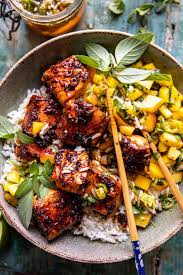

Honey Garlic Salmon

Sticky sweet and garlicky, this glazed salmon recipe comes together in just 20 minutes
We all know how nutritious salmon is… loaded with omega 3’s, high in protein and tons of vitamins, so I’m glad I can enjoy those benefits. And now, so can you!
You won’t believe how such a simple recipe can pack SO much flavor. Each bite is full of sweet and savory flavors and delicate textures.
Ingredients
- SALMON
- 1/2 tsp kosher salt
- 1/2 tsp black pepper
- 1/2 tsp smoked paprika (or regular paprika)
- 3 Tbsp butter
- 6 cloves garlic minced
- 1 Tbsp sriracha sauce
- 1/2 cup honey
Steps to Make
- Pat salmon filets dry and season with spices on all sides.
- Heat butter and oil, then add garlic, water, soy sauce, sriracha, honey and lemon juice.
- When hot, add salmon filets (skin side down if your filets have skin), and cook 3 minutes.
- While salmon cooks, use a spoon to baste the filets.
- Broil for 5-6 minutes, until salmon is sticky sweet, slightly charred, and cooked to desired doneness.
- Buy good salmon – I prefer to buy fresh salmon from the grocery store, instead of frozen filets in bags, since those tend to be very thin. Cooking Light has a great article on how to pick the best salmon at the grocery store.
- Use it quickly – Salmon can go “off” or bad pretty quickly, so I prefer to buy my salmon no more than 1 day ahead of time.
- Pan-Sear – if you’d prefer, season salmon as directed, then pan sear in the pan. Flip over and sear on the other side, then remove to a plate. Add sauce ingredients to pan and cook until warmed through. Add salmon back to pan and spoon sauce over the salmon.
- Don’t overcook
Return to top
Home